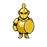
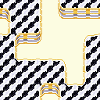
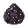

Dev Tools
후반 챕터 테스트용 — 스테이지 런처 + 콘솔 헬퍼 + Playwright 픽스처
0. Stage Launcher (dev server 필요)
버튼 한 번으로 원하는 스테이지에서 게임을 시작한다.
npm run dev 로 개발 서버를 켜두고 아래 버튼을 클릭하면 된다.
→ http://localhost:5173/dev-launcher.html 에서 동작 (게임 서버와 동일 오리진)
1. 브라우저 콘솔 헬퍼 window.__kc
개발 서버(npm run dev)에서 자동 활성화. 프로덕션 빌드에는 포함되지 않음.
__kc.help() 를 입력하면 전체 명령어 목록 확인 가능.| 명령어 | 설명 | 예시 |
|---|---|---|
__kc.go(stageId) |
해당 스테이지 직전 상태로 세이브를 설정하고 리로드한다. 이전 모든 스테이지를 3성 클리어 처리하고 충분한 골드·도구를 지급한다. | __kc.go('9-6') |
__kc.gold(n) |
골드를 추가한다. 리로드 없이 localStorage 즉시 반영 (다음 씬 전환 시 적용). | __kc.gold(50000) |
__kc.skipStory() |
모든 스토리 대사를 이미 본 것으로 처리한다. 대사가 반복 재생되지 않음. | __kc.skipStory() |
__kc.state() |
현재 세이브 상태(챕터, 골드, 클리어 스테이지 수, storyFlags)를 콘솔에 출력한다. | __kc.state() |
__kc.reset() |
세이브를 완전히 초기화하고 리로드한다. | __kc.reset() |
__kc.help() |
전체 명령어 목록과 스테이지 ID 목록을 출력한다. | __kc.help() |
빠른 이동 — 스테이지 ID
아래 ID를 __kc.go('스테이지ID')에 그대로 사용한다.
⚠ 스테이지 데이터 없음 — WorldMap에서 잠금 표시됨, __kc.go('8-x') 불가
sake_specter + oni_minion 중심 웨이브 / W6에 sake_oni 보스 등장
lao_joined, chapter10_clear 플래그 / __kc.go('10-1') 로 진입 가능
shadow_dragon_spawn + wok_guardian 최종 관문 / 11-6 wave 6: dragon_wok 약화 선등장 (hpOverride:2500)
- shadow_dragon_spawn:
walking-dde29672— 8방향 × 6프레임 - wok_guardian:
walking-bc1aca17— 8방향 × 6프레임 - dark_debuff: GatheringScene
_onDarkDebuff구현 — 범위 내 타워 공격력 -20% / 5초 - ENEMY_IDS 25종 확정
중식 아크(10~12장) 완결 / dragon_wok 12-6 정식 보스전 / 10-6은 sake_master(일식 보스)로 교체
- sake_master 신규 보스 (HP 7500, brewCycle/봉인방어막/분노 기믹)
- dragon_wok 스프라이트 리워크:
animating-30e6c64f - sake_master 스프라이트:
animating-8d3d020e(8방향×8프레임) - 10-6: sake_master 보스전 / 12-6: dragon_wok 최종 보스전
- 레시피 156종 / BOSS_IDS 9종 / SaveManager v16
- chapter12 대화 5종 (중식 아크 라오 서사 완결)
양식 아크 1장. 파리 별빛 비스트로, WCA 유럽 지부장 앙드레 등장. 셰프 누아르 첫 언급.
- chapter13 대화 3종: chapter13_intro, chapter13_mid (셰프 누아르 첫 언급), mimi_side_13
- CHARACTERS 앙드레(andre) 추가: WCA 유럽 지부장 🥐, 0x4169e1
- wine_specter 신규 적: 92px,
animating-aaf41951(HP ~350, 취기 디버프) - foie_gras_knight 신규 적: 92px,
animating-d9b31bcd(HP ~400, 방어 특화) - bistro_parisian 타일셋: 32×32 Wang 16타일, 파리 마블 흑백 체크 바닥
- truffle 재료 아이콘: 32×32 흑트러플 (13장 레시피용)
- SpriteLoader: 적 27종 / 타일셋 11종 / 재료 22종



WorldMap 그룹2(13~15장) · 그룹3(16~24장) 노드에 표시됨. 13장 스테이지 데이터는 Phase 27-3에서 추가 예정.
season2Unlocked → 탭2 해금 / season3Unlocked → 탭3 해금.HUD 별점은 현재 탭 그룹 기준으로 표시.
SaveManager.getTotalStars(group)
2. Playwright 픽스처 tests/fixtures/saveFixtures.js
각 챕터 진입 직전 상태의 세이브 데이터를 자동 주입한다.
사용 가능한 픽스처
FIXTURES.ch7_start
FIXTURES.ch8_start
FIXTURES.ch8_mid
FIXTURES.ch9_start
FIXTURES.ch9_boss
테스트 코드 예시
import { test, expect } from '@playwright/test';
import { injectSave, FIXTURES } from './fixtures/saveFixtures.js';
test.describe('9장 보스전', () => {
test.beforeEach(async ({ page }) => {
await page.goto('http://localhost:5173');
// 세이브 주입 (게임 초기화 전)
await injectSave(page, FIXTURES.ch9_boss);
await page.reload();
// 게임 로드 대기
await page.waitForFunction(
() => window.__game?.scene?.isActive('MenuScene'),
{ timeout: 80000 }
);
});
test('사케 오니 보스 스프라이트 로드', async ({ page }) => {
// WorldMap → 9-6 진입 테스트...
});
});
// 커스텀 세이브 상태가 필요한 경우
import { buildSaveForStage, injectSave } from './fixtures/saveFixtures.js';
const mySave = buildSaveForStage('8-4');
mySave.gold = 0; // 골드 없이 테스트
await injectSave(page, mySave);파일 위치
| 파일 | 설명 |
|---|---|
js/devtools/DevHelper.js |
window.__kc 구현체. DEV 환경에서만 로드. |
js/main.js |
import.meta.env.DEV 조건으로 DevHelper를 동적 임포트. |
public/dev-launcher.html |
Stage Launcher UI. Vite가 /dev-launcher.html로 서빙. 동일 오리진에서 localStorage 직접 조작. |
tests/fixtures/saveFixtures.js |
Playwright 픽스처. FIXTURES, injectSave, buildSaveForStage 익스포트. |